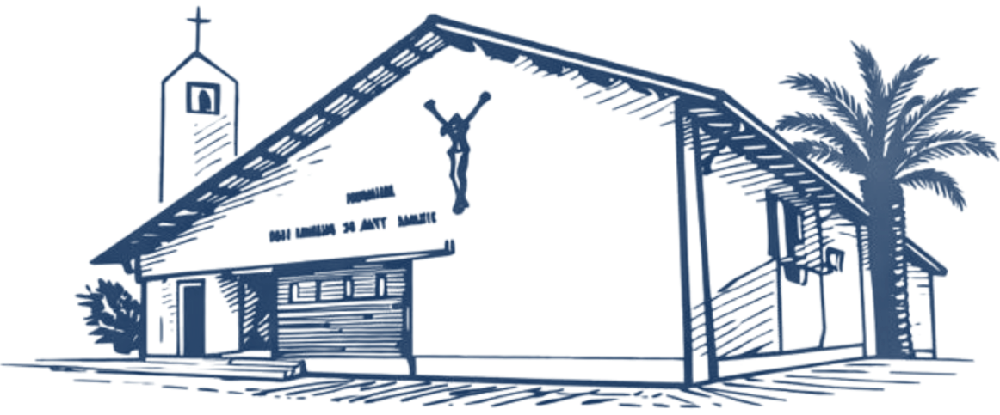

10:00 a 13:00 y 16:00 a 19:00 hrs.
Celebración
Santa Misa
Domingo · 11:00 hrs.
Horarios de Misa
Santa Misa: martes a sábado
19:00 hrs.
Domingo 11:00 hrs.
Confesiones
Martes y viernes
17:00 a 18:45 hrs.
En el templo parroquial
Secretaría parroquial
Martes a sábado
10:00 a 13:00 hrs.
16:00 a 19:00 hrs.
Adoración al Santísimo
Un espacio de encuentro y oración junto al Señor.
Lunes a viernes 10:00 a 19:00 hrs.
Sábado 09:00 a 19:00 hrs.
Aporta a tu Parroquia
Tu aporte nos ayuda a seguir sosteniendo la misión y la vida de nuestra comunidad parroquial.
Aporta a tu Parroquia
Comunícate con nosotros
Teléfono: +56 9 9280 3442
secretariaplourdes@gmail.com
Av. Balmaceda 1596, La Serena
Nuestra Señora de Lourdes
Su historia y su significado para nuestra comunidad parroquial.
Conoce su historiaNoticias y avisos
200×152
Estamos definiendo los días y el lugar; lo publicaremos aquí.
200×152
Primer y segundo año. Consulta requisitos en secretaría.
200×152
Un espacio de encuentro para nuestros mayores.
200×152
Conoce cómo sumarte a la misión.
Parroquia, capillas y santuario
Además de la parroquia matriz, seis lugares de celebración en nuestro territorio.
Una comunidad de fe al servicio de La Serena
Nuestra historia, nuestra patrona y los sacerdotes que acompañan la vida de la parroquia.
554×340
554×340
Más de seis décadas de comunidad
11 de mayo de 1961 · Fundación de la parroquia
2011 · 50 años de vida parroquial
2014 · Primera Capilla de Adoración Perpetua de la Arquidiócesis
2025 · Sede de la Jornada Nacional de la Juventud
La historia de la Parroquia Nuestra Señora de Lourdes de La Serena comenzó mucho antes de contar con un templo propio. En la entonces Población Juan Soldado, el Padre Waldo Alcalde Rivera acompañaba a las familias y jóvenes del sector, celebrando semanalmente la Eucaristía en una casa. Poco a poco fue creciendo una comunidad unida por la fe y por un sueño común: tener su propia iglesia.
En 1958, año en que se conmemoraba el centenario de las apariciones de la Virgen María a santa Bernardita en Lourdes, fue bendecida y colocada la primera piedra del futuro templo. Este acontecimiento marcaría también la advocación que acompañaría para siempre a la comunidad: Nuestra Señora de Lourdes.
El crecimiento de La Serena hizo necesaria la creación de una nueva parroquia. Así, el 26 de abril de 1961 se promulgó su decreto de fundación y, el 11 de mayo de ese mismo año, nació formalmente la Parroquia Nuestra Señora de Lourdes, siendo su primer párroco el Pbro. Waldo Alcalde Rivera.
Desde entonces, generaciones de familias han encontrado aquí un lugar para celebrar su fe y compartir la vida: bautizos, primeras comuniones, confirmaciones, matrimonios, despedidas, encuentros de oración y numerosas iniciativas de servicio y solidaridad. A través de sus comunidades, pastorales y agentes pastorales, la parroquia fue creciendo junto con el sector al que sirve.
En 2011, la comunidad celebró sus 50 años de vida parroquial y, en 2014, el templo se convirtió en sede de la primera Capilla de Adoración Perpetua de la Arquidiócesis de La Serena, fortaleciendo aún más su vocación de oración y encuentro con Jesús Sacramentado.
Un nuevo capítulo se escribió en 2025, cuando Nuestra Señora de Lourdes fue la sede de la Jornada Nacional de la Juventud realizada en La Serena. Durante aquellos días, la parroquia abrió sus puertas para recibir a cerca de mil peregrinos y se transformó en un importante centro de encuentro, trabajo pastoral, oración y servicio para jóvenes provenientes de distintos lugares del país.
Hoy, después de más de seis décadas, Nuestra Señora de Lourdes continúa siendo una comunidad de puertas abiertas, que busca vivir y anunciar el Evangelio, acompañar a las personas y seguir construyendo su historia junto a quienes encuentran en esta parroquia un lugar para crecer en la fe, servir y encontrarse con Cristo.
440×420
Nuestra Señora de Lourdes
La historia de Nuestra Señora de Lourdes comienza el 11 de febrero de 1858, en Lourdes, una pequeña localidad ubicada al sur de Francia. Ese día, Bernardita Soubirous, una joven de 14 años perteneciente a una familia humilde, se encontraba cerca de la gruta de Massabielle cuando contempló por primera vez a una hermosa Señora vestida de blanco.
Aquel encuentro fue el primero de 18 apariciones, ocurridas entre febrero y julio de ese mismo año. Durante ellas, la Virgen invitó especialmente a la oración, la penitencia y la conversión, y pidió que se construyera una capilla en aquel lugar y que las personas acudieran allí en procesión.
Con el paso del tiempo, la gruta de Massabielle se convirtió en un lugar de oración y peregrinación para millones de personas. Lourdes se encuentra especialmente unido a los enfermos y a quienes sufren, que llegan hasta allí buscando en María consuelo, fortaleza y esperanza, poniendo su confianza en Jesucristo.
En 1862, después de un proceso de investigación y discernimiento, la Iglesia reconoció oficialmente las apariciones de Lourdes. Desde entonces, la devoción a Nuestra Señora de Lourdes se ha extendido por todo el mundo y cada 11 de febrero la Iglesia celebra su memoria.
Nuestra parroquia lleva con alegría su nombre, confiándose a la protección maternal de María y haciendo suyo el mensaje que brota de Lourdes: acercarnos a Cristo por medio de la oración, la conversión, el servicio y una especial cercanía con quienes más necesitan consuelo y esperanza.
Nuestros sacerdotes
Pbro. Ariel Roldán Díaz
356×300
Pbro. Juan Carlos Álvarez S.
356×300
Pbro. Marcelo Gálvez Húmeres
356×300
Celebración de la Santa Misa
Todos los horarios de la parroquia matriz, el santuario y las cinco capillas. Si un horario cambia por una fiesta o feriado, lo avisamos en esta misma página.
1108×210
Parroquia Nuestra Señora de Lourdes
Domingo 11:00 hrs.
Jueves · Misa por las vocaciones
Sábado · Misa por los niños y jóvenes
Día 12 de cada mes · Misa de San Carlo Acutis, en el horario del día que corresponda
542×170
Santuario Santa Teresa de los Andes
542×170
Capilla Sagrado Corazón de Jesús y María
542×170
Capilla San Joaquín y Santa Ana
542×170
Capilla Jesús de la Misericordia
542×170
Capilla Corpus Christi
542×170
Capilla Santiago Apóstol
Confesiones
17:00 a 18:45 hrs.
En el templo parroquial.
Fuera de ese horario, consulta en Secretaría.
Adoración al Santísimo
Lunes a viernes 10:00 a 19:00 hrs.
Sábado 09:00 a 19:00 hrs.
Secretaría parroquial
10:00 a 13:00 hrs.
16:00 a 19:00 hrs.
+56 9 9280 3442
Celebrar la fe en comunidad
Cada sacramento con su significado, a quién está dirigido, los requisitos, los documentos necesarios y cómo inscribirse. Las inscripciones se realizan en la Secretaría Parroquial.
360 × alto de la ficha
Bautismo
El Bautismo es la puerta de entrada a la vida cristiana: por el agua y el Espíritu Santo nacemos como hijos de Dios y somos incorporados a la Iglesia.
Primera Comunión
En la Eucaristía recibimos por primera vez el Cuerpo de Cristo, alimento de la vida cristiana. La preparación se realiza a través de la catequesis.
360 × alto de la ficha
360 × alto de la ficha
Confirmación
La Confirmación completa la iniciación cristiana: el don del Espíritu Santo fortalece a la persona para vivir y anunciar su fe en la comunidad.
Matrimonio
El Matrimonio es la alianza por la que los novios se entregan mutuamente ante Dios y la comunidad. Incluye la catequesis prematrimonial.
360 × alto de la ficha
360 × alto de la ficha
Unción de los Enfermos
La Unción acompaña a quienes atraviesan una enfermedad o la fragilidad de la edad, con la gracia del consuelo, la paz y la fortaleza.
Confesión
En la Reconciliación nos encontramos con la misericordia de Dios, que perdona, sana y devuelve la paz al corazón.
360 × alto de la ficha
360 × alto de la ficha
Catequesis adultos
Proceso de formación para personas adultas que desean completar su iniciación cristiana: Bautismo, Primera Comunión o Confirmación. Tiene sus propios requisitos y su propio calendario, distintos de la Confirmación juvenil.
Inscripciones y consultas
Todos los sacramentos se gestionan a través de la Secretaría Parroquial. En la Unción de los Enfermos hablamos de solicitud y coordinación, no de inscripción.
Av. Balmaceda 1596, La Serena
+56 9 9280 3442
secretariaplourdes@gmail.com
Acompañamos a las familias
Gestiones y celebraciones que no requieren una inscripción sacramental. Cada servicio indica cómo solicitarlo y con quién coordinarlo.
420 × alto de la ficha
Funerales y velatorios
La parroquia acompaña a las familias en la despedida de sus seres queridos y coordina la celebración de las exequias. [POR COMPLETAR]
Av. Balmaceda 1596, La Serena · +56 9 9280 3442
secretariaplourdes@gmail.com
Intenciones de Misa
Puedes pedir que una Santa Misa se ofrezca por una persona enferma o por un difunto. Las intenciones se inscriben directamente antes de la celebración, sin trámite previo.
420 × alto de la ficha
420 × alto de la ficha
Coronas de Caridad
Qué son y en qué ocasiones se solicitan. [POR COMPLETAR]
Forma de solicitud y coordinación. [POR COMPLETAR]
Nuestras comunidades
La parroquia matriz acompaña a un santuario y cinco capillas. Cada comunidad tiene su propia ficha con dirección, horarios y contacto.
Santuario Santa Teresa de los Andes
460×300
Santuario Santa Teresa de los Andes
Breve descripción de la comunidad, su historia y su vida pastoral. [POR COMPLETAR]
Capilla Sagrado Corazón de Jesús y María
Breve descripción de la comunidad, su historia y su vida pastoral. [POR COMPLETAR]
Capilla Sagrado Corazón de Jesús y María
460×300
Capilla San Joaquín y Santa Ana
460×300
Capilla San Joaquín y Santa Ana
Breve descripción de la comunidad, su historia y su vida pastoral. [POR COMPLETAR]
Capilla Jesús de la Misericordia
Breve descripción de la comunidad, su historia y su vida pastoral. [POR COMPLETAR]
Capilla Jesús de la Misericordia
460×300
Capilla Corpus Christi
460×300
Capilla Corpus Christi
Breve descripción de la comunidad, su historia y su vida pastoral. [POR COMPLETAR]
Capilla Santiago Apóstol
Breve descripción de la comunidad, su historia y su vida pastoral. [POR COMPLETAR]
Capilla Santiago Apóstol
460×300
Encuentra dónde participar
Nuestros grupos se organizan en cinco categorías. Elige una en el índice y revisa sus comunidades con toda su información.
Catequesis y formación
Acompañamos el camino de la fe de niños, jóvenes, adultos y familias. · 5 grupos
Pastoral juvenil y vocacional
Espacios de encuentro, servicio y discernimiento para los jóvenes de la parroquia. · 3 grupos
Ministerios y espiritualidad
Comunidades de oración, liturgia y servicio al altar. · 8 grupos
Servicio y misión
Grupos que llevan el Evangelio y la caridad a los sectores de la parroquia. · 6 grupos
Música y expresión religiosa
Coros y expresiones que animan nuestras celebraciones. · 7 grupos
Av. Balmaceda 1596, La Serena
+56 9 9280 3442
secretariaplourdes@gmail.com
Solicitar certificados
Completa el formulario y la solicitud llegará directamente a la Secretaría Parroquial. La secretaría revisa los libros parroquiales y luego te confirma la emisión del certificado.
Datos del solicitante
Certificado solicitado
Datos de la persona que recibió el sacramento
Secretaría Parroquial
10:00 a 13:00 hrs.
16:00 a 19:00 hrs.
+56 9 9280 3442
secretariaplourdes@gmail.com
Solicitud enviada
Recibimos tu solicitud y llegó al correo de la Secretaría Parroquial. Revisaremos los libros parroquiales y te escribiremos para confirmar la emisión del certificado.
Secretaría: martes a sábado, 10:00 a 13:00 y 16:00 a 19:00 hrs.
El 1% a la Iglesia es una invitación permanente a colaborar, de manera libre y voluntaria, con un aporte mensual que ayuda a sostener la vida y misión de nuestra comunidad parroquial.
Como referencia, este aporte puede corresponder al 1% de tus ingresos, pero no existe un monto obligatorio. Cada persona aporta de acuerdo con sus posibilidades.
Tu aporte nos ayuda a
Inscríbete
Martes a sábado, 10:00 a 13:00 y 16:00 a 19:00 hrs.
Datos de transferencia
Ejemplo: uno por ciento María González

Comunidad de la Arquidiócesis de La Serena.
10:00 a 13:00 y 16:00 a 19:00 hrs.